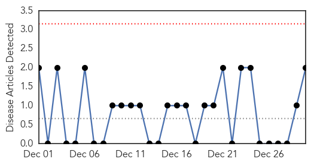
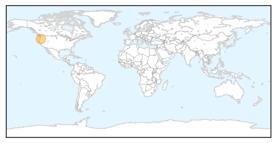
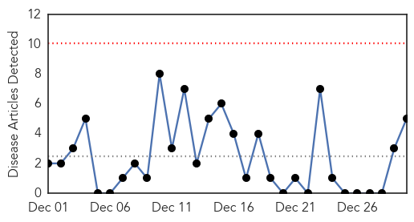
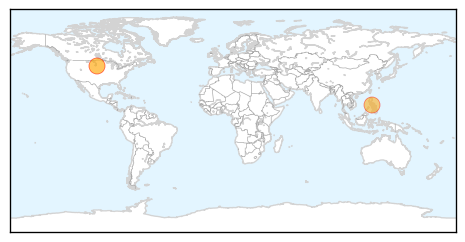
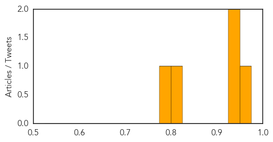

Mold/Fungal
30-Day Web Trend
0 alerts, 0 warnings

30-Day Twitter Trend
0 alerts, 0 warnings

Article Locations
Article Confidences

Top Articles:
Top Tweets:
-
No tweets found for Dec 30, 2014
Measles
30-Day Web Trend
0 alerts, 0 warnings

30-Day Twitter Trend
0 alerts, 0 warnings

Article Locations
Article Confidences
Top Articles:
- 0.952
- Vaccination best prevention for measles, officials say
- 0.935
- Why Increased Measles Cases Worries Health Officials
- 0.929
- Why New North Carolina Measles Cases Worries Health Officials
- 0.801
- KOTATV.com Rapid City, Black Hills, So Dak. Gillette Sheridan KOTA Territory News
- 0.793
- Unvaccinated child in Davison County is first measles case since 1997
Top Tweets:
-
No tweets found for Dec 30, 2014